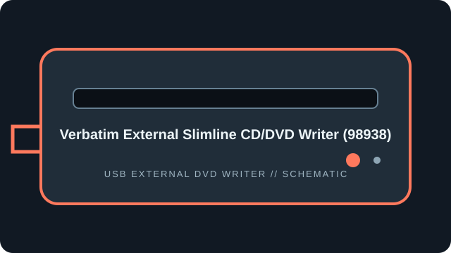

[ EXTERNAL DVD WRITERS // IDENTIFIED MODEL ]
Verbatim External Slimline CD/DVD Writer (98938)
Verbatim slimline external CD/DVD writer, part number 98938. This record reflects the cited slimline writer documentation, not other Verbatim external optical drives.

IDENTIFICATION: Match the full model/suffix and any bundled part number against the unit label and cited manual. Rated maximums depend on media, firmware, and operating mode; read support is not write support.
Documented specifications
| Catalog subcategory | External DVD writers |
|---|---|
| Exact model | Verbatim External Slimline CD/DVD Writer (98938) |
| Read media formats | CD-ROM, CD-R/RW; DVD-ROM, DVD±R/RW, DVD±R DL and M-DISC DVD-R. |
| Rated read speeds | DVD-ROM and recordable DVD up to 8×; DVD±R DL up to 6×; CD-ROM/CD-R/RW up to 24×. M-DISC read speed is not separately specified in the cited listing. |
| Write media formats | CD-R/RW; DVD±R and DVD±RW, DVD±R DL, and M-DISC DVD-R. |
| Rated write speeds | DVD±R up to 8×; DVD+RW up to 8×; DVD-RW up to 6×; DVD±R DL up to 6×; M-DISC DVD-R up to 4×; CD-R/RW up to 24×. |
| USB interface | External slim USB 2.0, bus-powered; product package includes USB-A connectivity and a USB-C adapter in some regions. Port adapters do not change the USB 2.0 drive interface. |
| OS / firmware compatibility | Verbatim lists Windows 8/10/11 and macOS 10.6 or later for drive operation; bundled Nero software is Windows-only. No 98938 firmware revision is stated on the cited product page; use only Verbatim model-specific support files. |
| Model distinction | Part number 98938 identifies this slimline CD/DVD writer; confirm the product label because Verbatim sells several similarly named external drives. |
Use, compatibility & preservation
- External slim USB 2.0, bus-powered; product package includes USB-A connectivity and a USB-C adapter in some regions. Port adapters do not change the USB 2.0 drive interface.
- Verbatim lists Windows 8/10/11 and macOS 10.6 or later for drive operation; bundled Nero software is Windows-only. No 98938 firmware revision is stated on the cited product page; use only Verbatim model-specific support files.
- Part number 98938 identifies this slimline CD/DVD writer; confirm the product label because Verbatim sells several similarly named external drives.
- Record drive model and reported firmware, host OS, USB controller, application version, disc format, media brand and any read or verification errors when imaging.
- Keep checksummed image copies and logs; store discs in cases away from heat, moisture and direct sunlight. Avoid adhesive labels, abrasives and undocumented solvents.
Firmware support is model-specific: do not cross-flash a related product family or infer an update from an adjacent suffix.
Sources
- Verbatim External Slimline CD/DVD Writer 98938 — product pageManufacturer product listing for part number 98938 and operating-system notes.
- Verbatim External Slimline CD/DVD Writer — user manualManual mirror for the named slimline CD/DVD writer; confirm 98938 and manual revision against the label.